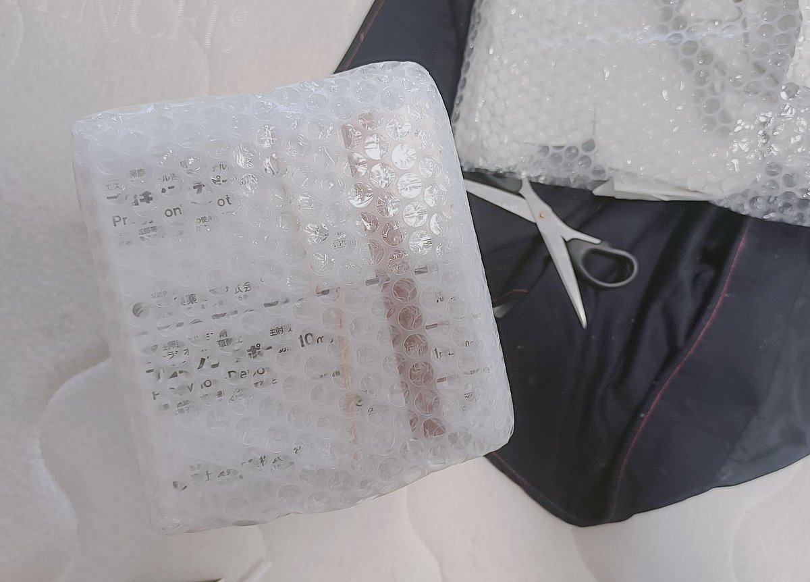

時璃風医詩🌈🏳️🌈
@hagishigure
找tyw不如找我们批发。
图： @seiya_help 上次发货。

唐毓文
@NomtfYuwen
没跑路
正常发
我失算了 我以为15号清关 结果昨天才清关
但现在两批都已经在运输中了（一批15盒 一批14盒）
这个人我不给她发是因为她威胁要学小圆自爆卡车（太傻逼了） 我一向不惯着别人
她威胁我 我偏就不给她发😎
正常问情况我一般都回
理解万岁 https://t.co/0VuExJ3ed0 https://t.co/Xli8njdgg3